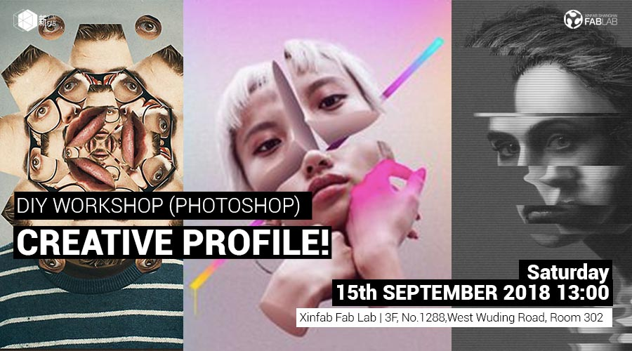
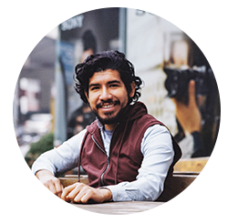

WORKSHOP
[15.09.2018] DIY Workshop Photoshop-CREATIVE PROFILE

When: September 15th (13.00-16.00)
Where: Xinfab - Wuding West Rd. 1288, Room 302, DoArt Space, Jing'an District | Xinfab-静安区武定西路1288号302,DoArt Space
Price: 200RMB on AliPay (210RMB WeChat - Wechat charges us a fee)
Hard to choose among all the great selfies you have...which one is the best to use on your website or portfolio?
.jpg)
What about doing your own creative profile photo collage?!
Join Daniel Cuesta in this cool workshop and learn the basics of how to use Adobe Photoshop. This powerful software allows you to recreate and retouch, photos, images and more!
This intro workshop is designed to familiarize you with the essential tools and techniques in Photoshop. Following some step-by-step instruction, you will learn basic photo retouching, color correction, selections, replacing backgrounds, adding type, etc. We will focus on preparing your images for the web. (or we will focus on showing you how to make your own profile pic).
Things you should bring:
-Laptop and charger
-Install previously Adobe Photoshop CC 2018 in your computer DOWNLOAD TRIAL HERE
-Mouse or a wacom tablet if you have it (though not necessary, will make it easier when working with Photoshop)
-Bring a clear, well-lit digital photo of yourself that you want to work on (most taken with a cell phone will work fine, though the quality/size will vary)r
-Your passion, curiosity and questions
Max: 8 students
///////////////////////////////////
WORKSHOP SCHEDULE
3hrs Workshop 13:00-16:00
PART 1
-Basic overview of Photoshop: what does it do?
-Photoshop UI and workspace
PART 2 Tools/Panels
-Selection tools: magic wand, quick selection, select and mask
-Basic retouching tools
-Adjustment layers
-Creating a simple composite
-Preparing /saving files for web
-Keyboard shortcuts/zooming & scrolling (navigating an image)
PART 3
-Adobe Creative Cloud libraries*
PART 4
-Finally, get your own creative photoshopped profile pic!
Requirements
This is an introductory course designed for first time beginning Photoshop users. No prior experience with Photoshop is required for this class.
Extra info
-Course taught in English
-Minimum quorum to open the course: 3 students
///////////////////////////////////
HOW TO SIGN UP
SIGN UP DEADLINE: WEDNESDAY, SEPTEMBER 13th (evening)
// ALIPAY (200 RMB):
transfer the workshop fee to pay@xinfab.com (please indicate your phone number on the payment details so we can contact you!)
// WECHAT (210 RMB - Wechat charges a fee)
Enter our shop with your phone via this QR code and proceed to payment with Wechat Wallet
Questions? Send an email to info@xinfab.com.
///////////////////////////////////
ABOUT THE TEACHER

If you visit San Francisco or Los Angeles, you'll probably find some of Daniel's street art scattered across the city (if it hasn't already been painted over). He has roots in woodcutting and screenprinting, which he learned from Austrian printmaker Dirk Hagner. He has experience in graphic design and animation which he learned from Disney animator Hector Rivas. And he has a passion for photography (he still uses film rolls which he learned to develop on his own). Daniel has been based in Shanghai since 2013, when he moved to China to help launch programs at NYU Shanghai where he also taught photography and art workshops. These days you can find Daniel putting his creative energy into photography, storytelling, and exploring his skill set into the growing field of 360 video for VR and AR projects.
///////////////////////////////////
很难在你拥有的所有伟大的自拍中做出选择，哪一个最适合在你的网站或投资组合中使用...
做自己的创意照片拼贴怎么样?!
加入Daniel Cuesta参加这个很酷的研讨会，学习如何使用Adobe Photoshop的基础知识。 这个功能强大的软件允许您重新创建和润饰，照片，图像等！
本简介研讨会旨在让您熟悉Photoshop中的基本工具和技术。 按照一步一步的说明，您将学习基本的照片修饰，颜色校正，选择，替换背景，添加类型等。
我们将专注于为网络准备您的图像。 （或者我们将专注于向您展示如何制作自己的个人资料照片。
你应该带来的东西
-计算机和充电器
-在计算机中安装以前的Adobe Photoshop CC 2018：DOWNLOAD TRIAL HERE
-如果你有鼠标或wacom数位板（虽然没有必要，使用Photoshop时会更容易）
-带上你想要工作的照片（大多数用手机拍摄都会很好，但质量/尺寸会有所不同）
-你的热情，好奇心和疑问
///////////////////////////////////
课程时间和日程安排
3小时工作坊13:00-16:00
第1步
-Photoshop的基本概述：它有什么作用？
-Photoshop UI和工作区
第2步：工具/小组
-选择工具：魔棒，快速选择，选择和掩码
-基本修饰工具
-调整图层
-创建一个简单的复合
-准备/保存Web文件
-键盘快捷键/缩放和滚动（导航图像）
第3步
-Adobe Creative Cloud库
第4步
-最后，获取您自己的创意photoshopped个人资料照片！
///////////////////////////////////
注册截止日期：9月13日 星期四(晚间)
_ALIPAY（200RMB）：将研讨会费用转至pay@xinfab.com（请在付款明细上注明您的姓名和电话号码，以便我们与您联系！）
_WECHAT (210 RMB - 微信收费）:通过此QR码使用您的手机进入我们的商店，然后使用微信钱包付款
///////////////////////////////////
关于Daniel Cuesta
如果您访问旧金山或洛杉矶，您可能会发现丹尼尔的一些街头艺术散落在整个城市（如果它还没有被涂过）。 他从奥地利版画家Dirk Hagner那里学到了木刻和丝网印刷的基础。 他从迪士尼动画师Hector Rivas那里学到了平面设计和动画方面的经验。 他对摄影充满热情（他仍然使用他学会自己开发的胶卷）。 丹尼尔自2013年以来一直在上海工作，当时他移居中国帮助在上海纽约大学开设课程，并在那里教授摄影和艺术工作室。 如今，你可以找到丹尼尔将他的创造力投入摄影，讲故事，并探索他的技能，以适应VR和AR项目不断增长的360视频领域。